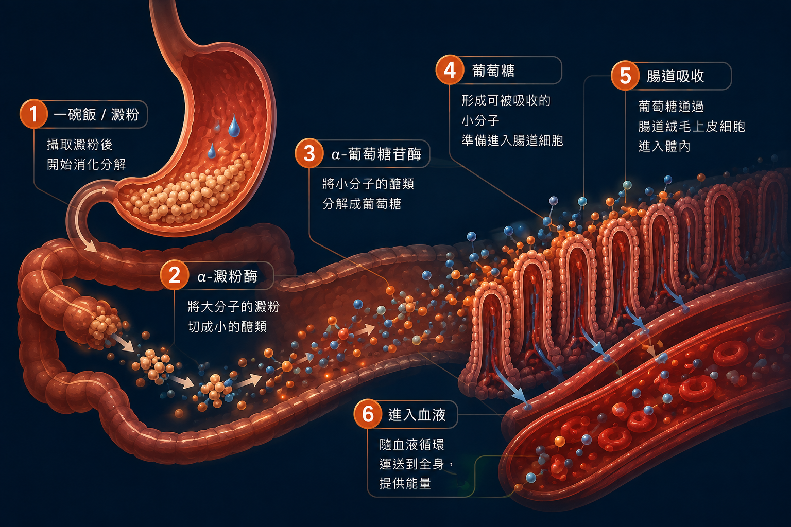
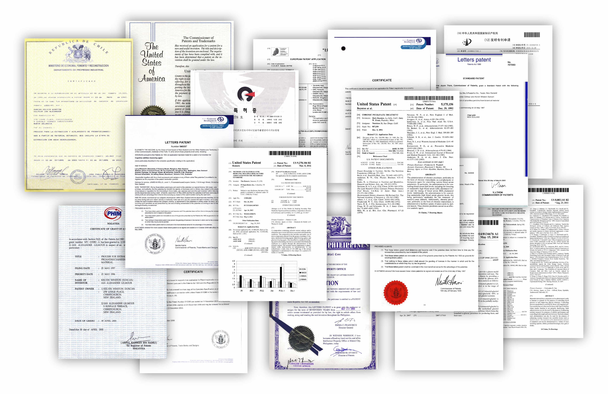

下午老是「斷電」？62歲的他明明很認真控醣，半年後才發現自己漏了一件事
「最近真的老了，代謝差很多，尤其吃完午餐後最明顯。」62歲的林先生，這兩年很常把這句話掛在嘴邊。
明明上午精神還不錯，一到下午兩、三點，整個人就像突然被拔掉插頭。原本想做點事，坐在沙發上沒多久，眼皮卻越來越重。如果只是偶爾一次也就算了，偏偏這種「午後斷電」三不五時就會出現。
還有一件事也讓他納悶。明明午餐才吃完沒多久，到了下午三、四點，有時又開始覺得餓，看到桌上的餅乾、麵包，總會忍不住順手拿一點。
「奇怪，我中午明明有吃飽，怎麼這麼快又餓了？」
林先生沒想太多，只當是年紀到了、代謝變差。也因此這幾年，他開始認真「控醣」：少喝含糖飲料、少碰甜點，就連白飯都會刻意控制份量。
但讓他想不通的是，明明已經很注意醣類攝取，為什麼下午還是容易沒精神，有時甚至沒多久又開始覺得餓？
「我已經吃很少了，還要怎麼減？」女兒也開始懷疑：問題真的只是吃太多嗎？
那天女兒回家吃飯，午餐才結束沒多久，林先生又坐在沙發上喊累。
女兒隨口問：「你中午是不是又亂吃？」
林先生馬上反駁：「哪有！飲料喝無糖的，妳買回來的蛋糕我也沒碰，飯我還只吃這樣，還要我怎麼吃？」
女兒看了一眼餐桌，這次倒真的沒辦法反駁，因為這幾年爸爸的確有在改變飲食習慣，從以前一大碗飯扒到底，到現在會自己注意份量；家裡有蛋糕，也不再每次都跟著吃，真的進步很多了。
但也正因為這樣，問題反而來了。
該少的都少了，難道接下來還要繼續少？
「不然我飯再減半？」林先生有點不耐煩，「到最後是不是什麼都不要吃最好？」
女兒一時也答不上來。仔細想想，這幾年爸爸只要覺得自己的狀態不太好，做的永遠都是同一件事：飲料換無糖，甜點少吃點，白飯再減一點。好像講到顧代謝，最後的答案永遠都是「少吃」。
但如果爸爸已經在注意糖分與澱粉攝取，為什麼有時吃完容易沒精神，過沒多久又開始喊餓？問題真的還只是「吃太多」嗎？
女兒也因此開始好奇：除了吃進去多少之外，醣類吃下肚之後，身體會怎麼處理？還有沒有其他值得注意的地方？
原來控醣不只是少吃！除了「吃多少」，吃下肚之後也值得注意
女兒一查才發現，他們以為的「控醣」，好像都只專注在「少吃一點」。
今天吃了多少飯？
有沒有喝含糖飲料？
甜食是不是吃太多？
這些當然都值得注意，但白飯、麵食等醣類吃下肚後，還要經過消化、分解，再被身體吸收利用。
其中α-澱粉酶與 α-葡萄糖苷酶，就是參與醣類分解的重要消化酵素，負責把澱粉慢慢拆開，進而讓身體吸收利用。
這才讓父女倆第一次意識到，原來控醣除了注意吃進多少，醣類吃下肚之後發生什麼，也很值得注意。

女兒幫他找到一線曙光：褐藻裡的這種成分，竟和醣類分解有關
知道醣類消化、分解這一段也值得注意之後，女兒往這個方向繼續鑽研。
這時候，她注意到了一個以前從沒聽過的名字——褐藻多酚。它是存在於褐藻中的天然多酚成分。
而真正讓她停下來繼續看的，是相關研究探討的方向，剛好就跟她前面查到的兩種醣類消化酵素有關：α-澱粉酶與 α-葡萄糖苷酶。
相關研究資料中，特定褐藻多酚針對α-澱粉酶的抑制活性為81,000 IU/G，針對α-葡萄糖苷酶的抑制活性則為 57,000 IU/G。
林先生看到這些數字一頭霧水：「妳講這些什麼酶，我哪知道是什麼？」
女兒索性換成最簡單的說法：「你以前一直注意的是這餐吃進去多少，但這些研究看的，是醣類吃進去之後怎麼被分解。」
這樣一講，林先生就懂了。
原來除了每天死盯著「有沒有吃甜食」、「白飯是不是又吃太多」，還可以進一步了解醣類吃下肚之後，是怎麼被消化、分解的。
對已經戒掉不少甜食、飲料也幾乎都喝無糖的林先生來說，這個角度反而讓他很有興趣，因為至少這一次，不是又一味地叫他少吃點。
當然，這並不代表從此白飯可以隨便吃、甜食也不用控制。
原本該注意的飲食習慣還是得維持，只是除了吃進去的東西之外，還可以多了解吃下肚之後會發生什麼事。
看到「6個月人體研究」，原本半信半疑的他決定給自己半年看看
不過，光是聽到「褐藻多酚」四個字，還不足以讓林先生馬上相信。
這幾年朋友群組傳來的養生資訊太多了，這個說吃幾天就有感，那個說一個月就差很多，每一個都講得很厲害。
所以他沒有急著試，反而先問女兒：「這個有人真的吃過、研究過嗎？」
女兒繼續查，發現除了醣類消化酵素研究之外，相關原料也累積了許多人體研究資料，其中一份人體研究，觀察時間長達6個月，這點特別讓父女倆停下來多看了幾眼。再往下查，相關原料還有30項國際專利，以及加拿大衛生部相關認證資料。

看到這裡，原本半信半疑的林先生決定花半年試試看，但他沒有因此改掉原本的控醣習慣，飲料還是喝無糖，甜食還是少吃，白飯也繼續注意份量。家人聚餐照樣參加，偶爾想吃點喜歡的東西還是會吃，沒有因此把生活搞得綁手綁腳。
真正有變動的，是開始把褐藻多酚加進原本的日常裡。
既然看到的是6個月的研究，他也不想吃個三、五天，就急著替自己下結論。
就半年，時間到了，再回頭看看。
幾天下來沒感覺，他差點想放棄；幾個月後才驚覺真的不一樣
嘴上說好要看半年，真的開始之後，林先生卻沒有自己想像中那麼有耐心。
才剛開始沒多久，林先生某天下午又昏昏沉沉，忍不住問女兒：「怎麼還是這麼累？」
女兒笑他：「才幾天，你以為是仙丹？」
這句話讓他安分下來。畢竟精神好不好，本來就會受到睡眠、活動量、吃得多少等因素影響，他也乾脆不再天天追著感覺跑。
直到幾個月後一次家庭聚餐，林先生吃得比平常豐盛，吃完飯後，他陪著家人聊天、收拾桌上的碗盤，東摸西摸忙了好一陣子，突然自己冒出一句：「欸，我今天怎麼沒有想去躺？」
他這才回頭發現，以前三不五時就會出現的午後斷電感，似乎沒有那麼常報到了。以前到了下午常常一邊喊累、一邊又想找點東西吃，最近這種情況好像也沒有那麼頻繁。
他沒有急著把這些變化全都歸到某一件事情上，只是把時間拉長回頭看，才慢慢注意到這些生活裡的小差別。
半年到了，他沒再嚷嚷著代謝差，反而多了一套自己的心得
半年後，女兒問他：「最近好像很少聽到你喊代謝差了？」
林先生笑著說：「現在不敢亂講了。」
以前下午一累，他就怪年紀、怪代謝，接著開始想下一餐是不是又要少吃一點。
現在的他，還是會注意份量、少喝含糖飲料，但偶爾聚餐、吃甜點時不再那麼緊張了。
這半年讓他真正學到的，是控醣不等於一味少吃。以前他總以為，只要飲料再少一點、甜食再戒一點、澱粉再減一點，就是自己唯一能做的事。
繞了一圈他才發現，自己真正漏掉的，是從來沒有好好了解每天吃進去的這些醣。
以前他只會問：「是不是又要再少吃一點？」
現在，他總算不再只剩少吃這一個答案。